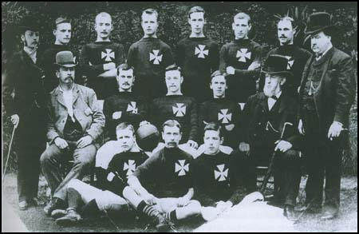
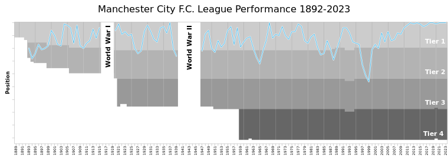
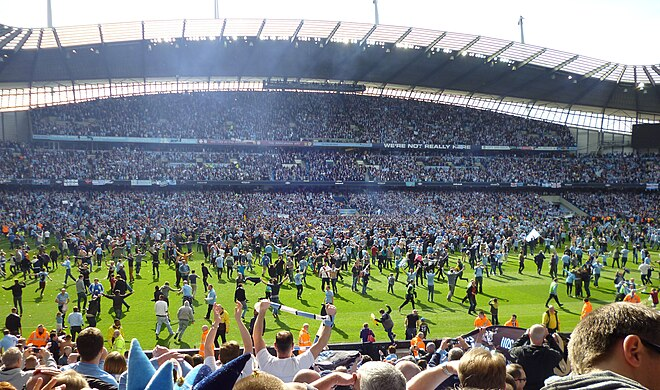

Ontstaan
De club werd in 1880 opgericht als Weston Gorton Saint Marks. In 1887 verhuisde de club naar het nieuwe stadion Hyde Road in Ardwick, in het oosten van Manchester en werd de club omgedoopt in Ardwick Football Club. In 1891/92 sloot de club zich aan bij de Football Alliance, de tegenhanger van de Football League. Het volgende seizoen werd de Football Alliance opgeslorpt door de Football League en werd de competitie de tweede klasse van het systeem. Door financiële problemen kwam er een reorganisatie binnen de club in 1893/94 en werd de naam veranderd in Manchester City Football Club.
Heen en weer
In 1896 werd de club vicekampioen achter Liverpool maar kon niet promoveren. Drie jaar later was het wel raak toen de titel gewonnen werd. Na drie seizoenen degradeerde de club en kon na één seizoen terug promoveren. Bij de herintrede werd de club vicekampioen achter Sheffield Wednesday en versloeg het Bolton Wanderers met 1-0 in het stadion van Crystal Palace in de finale van de FA Cup. De club haalde nog enkele goede resultaten, maar degradeerde opnieuw in 1909. Ook nu kon de club na één seizoen terugkeren en haalde middelmatige resultaten tot de competitie stilgelegd werd door de Eerste Wereldoorlog, in het laatste seizoen werd de club vijfde.
Na de oorlog ging de club met hetzelfde elan verder en haalde goede resultaten, in 1921 werd de tweede plaats behaald, achter Burnley. Een jaar eerder werd de hoofdtribune vernield door een brand en de club verhuisde in 1923 naar het nieuwe stadion Maine Road. Na de goede notering ging het bergaf tot een nieuwe degradatie volgde in 1926. Deze keer duurde het twee seizoenen vooraleer City zich weer bij de elite kon voegen. In 1933 bereikte de club opnieuw de finale van de FA Cup, maar verloor het van Everton, een jaar later was het wel raak toen Portsmouth verslagen werd.
In 1936/37 werd de club kampioen met drie punten voorsprong op Charlton Athletic. Het succes werd echter niet verlengd en er volgde zelfs een anticlimax door het volgende seizoen te degraderen, dat terwijl de club 80 keer scoorde, het meeste in de hele divisie. In de tweede klasse eindigde de club in de subtop, in 1939 werd de competitie vroegtijdig stilgelegd door het uitbreken van de Tweede Wereldoorlog.
Naoorlogse periode
Na de oorlog werd de club meteen kampioen in de Second Division en schaarde zich weer bij de elite. Na twee seizoenen in de top tien degradeerde de club opnieuw in 1950. Na één seizoen keerde City terug en vocht enkele seizoenen tegen degradatie tot 1954/55 toen de club zevende werd en de FA Cup won tegen Birmingham City. Deze FA-finale, die de club met 3-1 won, is een van de beroemdste in de geschiedenis, omdat City-doelman Bert Trautmann een kwartier voor het einde een nekwervel brak na een botsing en gewoon verder speelde zonder te weten wat er aan de hand was. Het jaar erna werd de club vierde in de competitie, de volgende seizoenen was de club een middenmoter met af en toe een uitschieter. In 1963 degradeerde de club weer en kon zelfs in de tweede klasse niet met de top mee aan de eerste twee seizoenen, de toeschouwers lieten het ook afweten en in januari 1965 kwam het laagterecord opdagen, 8.015 tegen Swindon Town. Het derde seizoen in de Second Division was wel raak en de club promoveerde opnieuw, dit keer voor een succesvol tijdperk.
Gouden jaren
Na een rustig seizoen deed de club helemaal mee voor de titel in 1967/68 samen met verdedigend kampioen en aartsrivaal Manchester United. City won de titel met twee punten voorsprong op United en mocht voor het eerst Europees spelen. Het Turkse Fenerbahçe SK maakte er echter een kort avontuur van. Ook in de competitie liep het niet vlot en de club werd slechts dertiende, al was dat wel een stuk beter dan de vorige keer toen ze kampioen waren. Troostprijs dat jaar was een nieuwe FA Cup-overwinning en een nieuw Europees avontuur. Athletic Bilbao, Lierse, Académica en Schalke werden achtereenvolgens opzij gezet en in de finale van de Europacup II won City van het Poolse Górnik Zabrze. Zo werd de club in 1969 de tweede ploeg die een nationale en internationale beker won in hetzelfde seizoen. Het volgende jaar werd de club in de halve finale verslagen door Chelsea. In 1974 mocht de club op de laatste speeldag van het seizoen de genadeslag geven aan Manchester United door uitgerekend een goal van oud-speler Denis Law met 1-0 te winnen, waardoor degradatie voor United volgde.
Donkere jaren
De jaren tachtig luidde een minder goede periode in. Zo degradeerde de club in 1983 en speelde het twee jaar in de tweede divisie en vervolgens weer twee jaar in de eerste divisie om vervolgens weer te degraderen en twee jaar in de tweede divisie te spelen. De jaren negentig begonnen beter met een vijfde plaats in 1991 en 1992 onder leiding van trainer Peter Reid. Nadat hij vertrok ging het ook slechter met de club. In 1992 was City medeoprichter van de Premier League die de First Division verving als hoogste klasse. Daar speelde de club tot 1996 toen een nieuwe degradatie volgde. Twee seizoenen later was een dieptepunt in de historie van de club bereikt, The Citizens degradeerde naar de derde klasse (Second Division).
In het eerste seizoen werd de club derde en kon het via de play offs promoveren. Hoe ver het eersteklassevoetbal ook klonk in 1998 toen de club degradeerde, zo dichtbij was het toen het nieuwe millennium ingeluid werd en de club als vicekampioen zich weer bij de top van het Engelse voetbal schaarde. Met de doelpunten van de Bermudaanse aanvaller Shaun Goater leek een heropstanding ingeluid. De twee promoties op rij waren echter wat te veel geweest voor de club die meteen weer degradeerde. Maar toen werd City opnieuw kampioen en bij de terugkeer werd de negende plaats bereikt en werd er weer Europees gevoetbald. Twee jaar later deed de club het nog beter met een achtste plaats.
Thaise invloed
In de zomer van 2007 werd bekend dat Manchester City als de zoveelste club in Engeland werd overgenomen door een miljardair. De Thai Thaksin Shinawatra nam voor 81,6 miljoen pond tachtig procent van de aandelen over. Hij pompte enkele miljoenen in de selectie wat ervoor zorgde dat de nieuwe trainer, Sven-Göran Eriksson, acht nieuwe spelers kon kopen, waaronder Rolando Bianchi en Vedran Ćorluka. Het leverde echter geen grote resultaten op.
Zilvervloot
In 2008, slechts een jaar na de overname door Shinawatra, werd de club gekocht door de Abu Dhabi United Group dat voor 185 miljoen een meerderheidsbelang kocht. Het vermogen van de familie Al Nahyan, een van de investeerders, zou geschat worden op 32 miljard euro, waardoor City in één klap de rijkste club ter wereld werd.
Eén van de motieven van de investeerders is het promoten van Abu Dhabi op sportief en cultureel gebied. De Thai Thaksin Shinawatra mocht aanblijven als voorzitter. De eerste grote aankoop die Manchester City sinds de nieuwe overname deed was Robinho, die voor 42 miljoen euro werd overgenomen van Real Madrid, daarnaast werd ook Vincent Kompany aangetrokken. De Belg werd overgenomen van Hamburger SV voor 8 miljoen euro. Ook in de jaren erna volgden er grote aankopen, zoals Carlos Tévez, Kolo Touré, Patrick Vieira, David Silva en Sergio Agüero. In de zomers van 2011, 2012 en 2013 werd bijna 273 miljoen pond aan nieuwe spelers uitgegeven. Ook werd er een hypermodern trainingscomplex van 200 miljoen pond gebouwd, vooral bedoeld voor de jeugd. Omdat de club de Financial Fair Play-regels van de FIFA niet nakwam, kreeg City van de wereldvoetbalbond een boete van 60 miljoen pond opgelegd en een salarisplafond. Tevens mocht de club vanaf seizoen 2014/15 maximaal 21 spelers inschrijven voor de Champions League. In een verklaring liet City weten de sancties zonder morren te accepteren.
Wederopstanding
De wederopstanding, met behulp van grote investeringen, werd op 13 mei 2012 bekroond met de landstitel in de wedstrijd tijdens de laatste speelronde tegen Queens Park Rangers. Het team stond tot de 92e minuut nog met 2-1 achter en zou met deze stand op het scorebord de landstitel over moeten laten aan de eeuwige rivaal Manchester United. Het onmogelijke lukte en City won toch nog door goals van Edin Džeko (92e minuut) en Sergio Agüero. 44 jaar na de landstitel van 1968 pakte City eindelijk weer eens die titel.
In 2014 herhaalde Manchester City dit feit door op de laatste speeldag West Ham United te verslaan met 2-0. Onder leiding van Manuel Pellegrini pakte de club dat seizoen de zogenaamde League Cup Double, want City had ook al de League Cup gewonnen, na een 3-1 winst op Sunderland AFC.
Onder leiding van de Spaanse succestrainer Josep Guardiola werden pas echt vele prijzen gepakt. In zijn eerste seizoen pakte de club nog geen prijs, maar wist de club wel een recordomzet van 473,4 miljoen pond te noteren. De omzet steeg met 21 procent. Er werd in het eerste jaar onder leiding van trainer-coach Pep Guardiola een winst geboekt van 1 miljoen pond (1,13 miljoen euro)[1].
Het seizoen 2017/18 verliep uitermate voorspoedig voor The Citizens. Lange tijd bleef de club ongeslagen. Op 23 december 2017 maakte Agüero zijn honderdste doelpunt in het Etihad Stadium van City, toen hij scoorde in de competitiewedstrijd tegen Bournemouth.[2] Door de 4-0 overwinning zette de ploeg van Guardiola een record neer: meer dan honderd goals (101) in één kalenderjaar. Op 14 januari 2018 leed Manchester City de allereerste nederlaag in de Premier League van dat seizoen. Dat gebeurde in de 23e speelronde en de tegenstander was Liverpool, dat op eigen veld met 4-3 zegevierde. Het was voor City de eerste verloren partij in de Premier League sinds 5 april 2017.
Liverpool won ook twee keer van City in de UEFA Champions League. Daarmee werden ze uitgeschakeld in de kwartfinales, nadat ze als groepswinnaar eindigen in een poule met Shakhtar Donetsk, Napoli en Feyenoord. In de achtste finales schakelde Manchester City Basel uit (5-2 over twee wedstrijden). De club kon op 7 april 2018 kampioen worden in de Manchester Derby tegen Manchester United. The Citizens kwamen op een 2-0 voorsprong door doelpunten van Vincent Kompany en İlkay Gündoğan, maar door doelpunten van Paul Pogba (2) en Chris Smalling moest het kampioenfeestje uitgesteld worden. Die werd een week later gevierd toen Manchester City won van Tottenham Hotspur en Manchester United verloor van West Bromich Albion. Dat werd de tweede prijs van het seizoen, nadat eerder dat seizoen al de Carabao Cup werd gewonnen door een 3-0 winst op Arsenal in de finale. Na het kampioenschap kreeg Leroy Sané nog een prijs: 'PFA Young Player Of The Year' voor beste jonge speler van het jaar in de Premier League. Ook werd de magische grens van 100 doelpunten in één Premier League-seizoen doorbroken, gescoord door oud-Manchester City-speler Pablo Zabaleta die toen voor tegenstander West Ham United speelde.
Op 10 juni 2023 won Manchester City na winst van de UEFA Champions League de treble. Hiermee werden Manchester City en Manchester United de enige twee Engelse clubs die dit presteerden.
Op 16 augustus 2023 werd voor het eerst in de clubhistorie de UEFA Super Cup gewonnen. In de reguliere speeltijd leverde de wedstrijd na een 1–1 gelijkspel geen winnaar op; de strafschoppenserie werd met 5–4 gewonnen van UEFA Europa League-winnaar Sevilla.